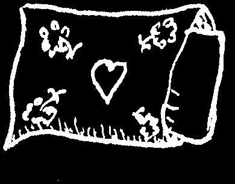


ALLERGIC REACTIONS
An allergy is a disturbance or reaction that affects only certain persons when things they are sensitive or allergic to are...
• breathed in
• eaten
• injected
• or touch the skin
Allergic reactions, which can be mild or very serious, include:
• itching rashes, lumpy patches, or hives (p. 203)
• runny nose and itching or burning eyes (hay fever, p. 165)
• irritation in the throat, difficulty breathing, or asthma (see next page)
• allergic shock (p. 70)
• diarrhea (in children allergic to milk—a rare cause of diarrhea, p. 156)
An allergy is not an infection and cannot be passed from one person to another.
However, children of allergic parents also tend to have allergies.
Often allergic persons suffer more in certain seasons—or whenever they come in touch with the substances that bother them. Common causes of allergic reactions are:
hair from cats and dust pollen of chicken other animals certain feathers flowers and grasses specific food, especially fish, shellfish, beer, etc.
kapok or feather pillows certain medicines, especially injections of penicillin or horse serum
(see p. 70)
chemicals in your home, moldy blankets or school, or work clothes
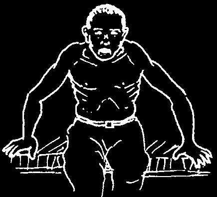

ASTHMA
sitting up to
A person with asthma has fits or attacks of difficult breathing.
breathe
Listen for a hissing or wheezing sound, especially when breathing out. When he breathes in, the skin behind his collar bones and between his ribs may suck in as he tries to get air. If the person cannot get enough air, his nails and lips may turn blue, and his neck veins may swell. Usually there is no fever.
Asthma often begins in childhood and may be a problem for life. It is not contagious, but is more common in children with relatives who have asthma. It is generally worse during certain months of the year or at night.
An asthma attack may be caused by eating or breathing things to which the person is allergic (see p. 166). In children asthma often starts with a cold.
Nervousness or worry may bring on an asthma attack. Asthma can also be caused by unclean air (air pollution), such as smoke from cigarettes, inside cooking fires, burning fields, or cars and trucks.
Treatment:
♦ If asthma gets worse inside the house, the person should go outside to a place where the air is cleanest. Remain calm and be gentle with the person. Reassure him.
♦ Give a lot of liquids. This loosens mucus and makes breathing easier. Breathing water vapor may also help (see p. 168).
♦ Strong coffee or black tea can help relieve an asthma attack if you do not have any medicines.
♦ For attacks, treat with the rescue inhaler salbutamol (albuterol, see p. 384) as often as
See p. 384 to learn how to needed. This is a spray medicine that you want to make a spacer breathe in as deeply as possible.
for your inhaler.
♦ For frequent attacks, or asthma that makes you gasp for breath while walking or during mild exercise, also use the controller inhaler (beclomethasone, see p. 384). Using a controller medicine can prevent attacks, save you money, and make you feel better than always responding to an asthma emergency.
Using a “spacer” with your inhaler allows more medicine to get to the lungs.
♦ For severe asthma where you cannot get enough air and do not improve with salbutamol, use prednisolone by mouth right away, and then continue for 3 to 7 days (see p. 385). In emergencies if you have no other medicines you can inject epinephrine (adrenalin, see p. 385) under the skin.
♦ In rare cases, worms cause asthma. Try giving mebendazole (p. 373) to a child who starts having asthma if you think she has worms.
♦ If the person does not get better, seek medical help.
Prevention:
A person with asthma should avoid eating or breathing things that bring on attacks. The house or work place should be kept clean. Keep chickens and other animals outside. Air bedding in the sunshine. Sometimes it helps to sleep outside in the open air. Drink at least 8 glasses of water each day to keep the mucus loose.
Persons with asthma may improve when they move to where the air is cleaner.
If you have asthma do not smoke—smoking damages your lungs even more.
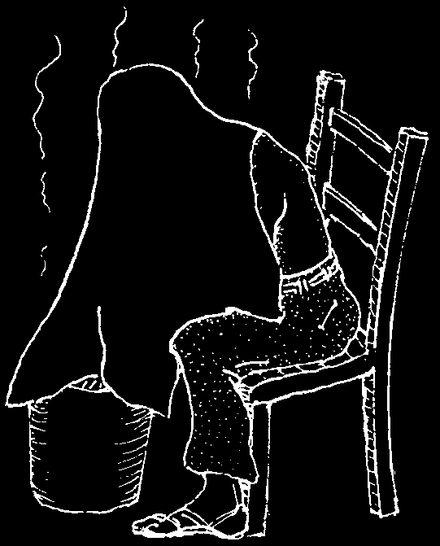
COUGH
Coughing is not a sickness in itself, but is a sign of many different sicknesses that affect the throat, lungs, or bronchi (the network of air tubes going into the lungs). Below are some of the problems that cause different kinds of coughs:
DRY COUGH WITH
COUGH WITH MUCH
COUGH WITH
LITTLE OR NO PHLEGM:
OR LITTLE PHLEGM:
A WHEEZE OR WHOOP
AND TROUBLE BREATHING:
cold or flu (p. 163)
bronchitis (p. 170)
asthma (p. 167)
worms—when passing pneumonia (p. 171)
whooping cough (p. 313)
through the lungs (p. 140)
asthma (p. 167)
diphtheria (p. 313)
measles (p. 311)
smoker’s cough, heart trouble (p. 325)
smoker’s cough especially when something stuck in the
(smoking, p. 149)
getting up in the throat (p. 79)
morning (p. 149)
CHRONIC OR PERSISTENT COUGH:
COUGHING UP BLOOD:
tuberculosis (p. 179)
tuberculosis (p. 179)
smoker’s or miner’s cough (p. 149)
pneumonia (yellow, green, or asthma (repeated attacks, p. 167)
blood-streaked phlegm, p. 171)
chronic bronchitis (p. 170)
severe worm infection (p. 140)
emphysema (p. 170)
cancer of the lungs or throat (p. 149)
Coughing is the body’s way of cleaning the breathing system and getting rid of phlegm (mucus with pus) and germs in the throat or lungs. So when a cough produces phlegm, do not take medicine to stop the cough, but rather do something to help loosen and bring up the phlegm.
Treatment for cough:
1. To loosen mucus and ease any kind of cough, drink lots of water. This works better than any medicine.
Also breathe hot water vapors. Sit on a chair with a bucket of very hot water at your feet. Place a sheet over the bucket to catch the vapors as they rise.
Breathe the vapors deeply for 15 minutes. Repeat several times a day. Some people like to add mint or eucalyptus leaves or Vaporub, but hot water works just as well alone.
CAUTION: Do not use eucalyptus or Vaporub if the person has asthma. They make it worse.
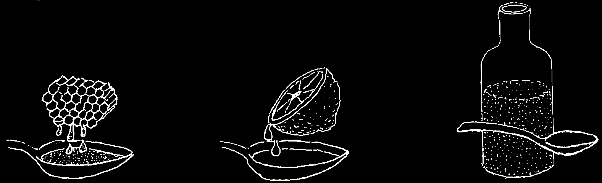
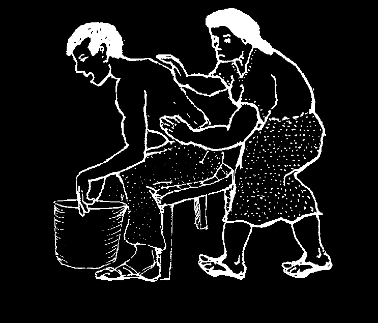
2. For all kinds of cough, especially a dry cough, the following cough syrup can be given:
Mix:
1 part
1 part honey lemon juice
+
Take a teaspoonful every 2 or 3 hours.
WARNING: Do not give honey to babies under 1 year. Make the syrup with sugar instead of honey.
3. For a severe dry cough that does not let you sleep, you can take a syrup with codeine (p. 383). Tablets of aspirin with codeine (or even aspirin alone) also help. If there is a lot of phlegm or wheezing, do not use codeine.
4. For a cough with wheezing (difficult, noisy breathing), see Asthma (p. 167),
Chronic Bronchitis (p. 170), and Heart Trouble (p. 325).
5. Try to find out what sickness is causing the cough and treat that. If the cough lasts a long time, if there is blood, pus, or smelly phlegm in it, or if the person is losing weight or has continual difficulty breathing, see a health worker.
6. If you have any kind of a cough, do not smoke. Smoking damages the lungs.
To prevent a cough, do not smoke.
To cure a cough, treat the illness that causes it—and do not smoke.
To calm a cough, and loosen phlegm, drink lots of water—and do not smoke.
HOW TO DRAIN MUCUS FROM THE LUNGS (POSTURAL DRAINAGE)
When a person who has a bad cough is very old or weak and cannot get rid of the sticky mucus or phlegm in his chest, it will help if he drinks a lot of water. Also do the following:
♦ First, have him breathe hot water vapors to loosen the mucus.
♦ Then pound him lightly on the back with a cupped hand. This will help to bring out the mucus.
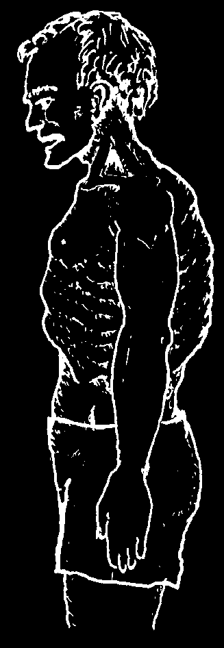
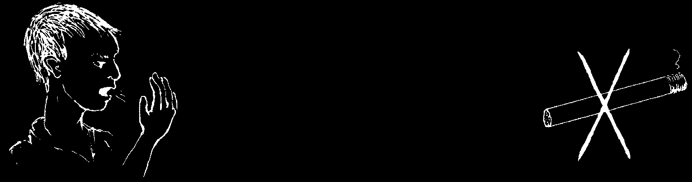
BRONCHITIS
Bronchitis is an infection of the bronchi or tubes that carry air to the lungs.
It causes a noisy cough, often with mucus or phlegm. Bronchitis is usually caused by a virus, so antibiotics do not generally help. Use antibiotics only if the bronchitis lasts more than a week and is not getting better, if the person shows signs of pneumonia (see the following page), or if he already has a chronic lung problem.
CHRONIC BRONCHITIS
Signs:
• A cough, with mucus that lasts for months or years.
Sometimes the cough gets worse, and there may be
'barrel fever. A person who has this kind of cough, but does chest’
not have another long term illness such as tuberculosis or asthma, probably has chronic bronchitis.
• It occurs most frequently in older persons who have been heavy smokers.
• It can lead to emphysema, a very serious and incurable condition in which the tiny air pockets of the lungs break down. A person with emphysema has a hard time breathing, especially with exercise, and his chest becomes big 'like a barrel’.
Emphysema can result
Treatment:
from chronic asthma, chronic bronchitis, or
♦ Stop smoking.
smoking.
♦ Take an anti-asthma medicine with salbutamol (p. 384).
♦ Persons with chronic bronchitis should use cotrimoxazole or amoxicillin every time they have a cold or 'flu’ with a fever.
♦ If the person has trouble coughing up sticky phlegm, have him breathe hot water vapors (p. 168) and then help him with postural drainage (see p. 169).
If you have a chronic cough
(or want to prevent one),
DO NOT SMOKE!
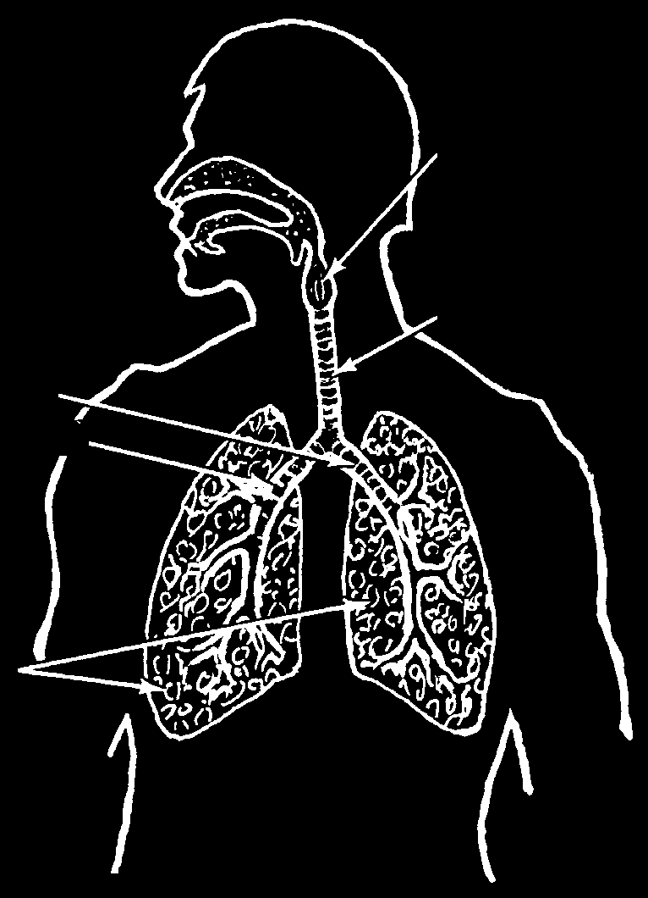
PNEUMONIA
Pneumonia is an acute infection of the lungs. It often occurs after another respiratory illness such as measles, whooping cough, flu, bronchitis, asthma—or after any very serious illness, especially in babies and old people. Also, persons with HIV may develop pneumonia.
Signs:
• Sudden chills and then high fever.
voice box
• Rapid, shallow breathing, with little grunts or sometimes wheezing. The nostrils may spread with each breath.
trachea
• Fever (sometimes newborns and old or very weak persons have severe pneumonia with bronchi
(air tubes)
little or no fever).
• Cough (often with yellow, greenish, rust colored, or slightly bloody mucus).
• Chest pain (sometimes).
lungs
• The person looks very ill.
• Cold sores often appear on the face or lips (p. 232).
A very sick child with fast, shallow breathing probably has pneumonia. For a newborn baby, fast breathing means more than 60 breaths a minute. For a baby between 2 months and 1 year, fast breathing is more than 50 breaths a minute, and for a child between 1 and 5 years old, 40 breaths a minute. (If breathing is rapid and deep, check for dehydration, p. 151, or hyperventilation, p. 24.) Do not count the breaths while the child is crying or just after she has stopped.
Treatment:
♦ For pneumonia, treatment with antibiotics can make the difference between life and death. Give penicillin (p. 351), cotrimoxazole (p. 357), or erythromycin
(p. 354). In serious cases, inject procaine penicillin (p. 352), adults:
400,000 units (250 mg.) 2 or 3 times a day, or give amoxicillin by mouth
(p. 352 to 353), 500 mg., 3 times a day. Give small children ¼ to ½ the adult dose. For children under 6, amoxicillin is usually best.
♦ Give aspirin (p. 378) or acetaminophen (p. 379) to lower the temperature and lessen the pain. Acetaminophen is safer for children under 12.
♦ Give plenty of liquids. If the person will not eat, give him liquid foods or
Rehydration Drink (see p. 152).
♦ Ease the cough and loosen the mucus by giving the person plenty of water and having him breathe hot water vapors (see p. 168). Postural drainage may also help (see p. 169).
♦ If the person is wheezing, an anti-asthma medicine may help (see p. 384).
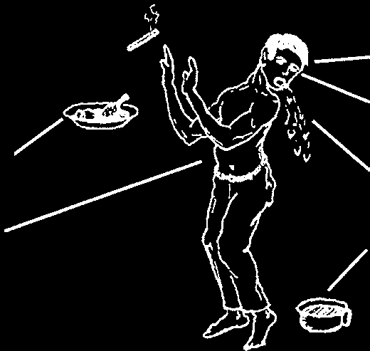
HEPATITIS
Hepatitis is an inflammation of the liver usually caused by a virus, but also by bacteria, alcohol, or chemical poisoning. There are 3 major types of hepatitis (A, B, and C) and it can spread from person to person whether or not there are signs of the disease. Even though in some places people call it 'the fever’ (see p. 26), hepatitis often causes little or no rise in temperature.
A person with Hepatitis A or Hepatitis B is often very sick for 2 to 3 weeks, weak for
1 to 4 months after, and then usually gets better.
Hepatitis A is usually mild in small children, but more serious in older persons and in pregnant women. Hepatitis B is more serious and can lead to permanent scarring of the liver (cirrhosis), liver cancer, and even death. Hepatitis C is also very dangerous and can lead to permanent liver infections. It is a major cause of death for people with HIV.
Signs:
• May have a fever.
• Feels tired. Does not want to eat or smoke. Often goes days
• After a few days, the eyes without eating anything.
and skin turn yellow.
• Sight or smell of food
• Sometimes there is a pain on may cause vomiting.
the right side near the liver.
• The urine may turn dark like
Sometimes there is pain in
Coca Cola, and the stools the muscles or joints.
may become whitish, or the person may have diarrhea.
Treatment:
♦ Antibiotics do not work against hepatitis. In fact some medicines such as acetaminophen will cause added damage to the sick liver. Do not use medicines.
♦ The sick person should rest and drink lots of liquids. If he refuses most food, give him orange juice, papaya, and other fruit plus broth or vegetable soup. It may help to take vitamins. To control vomiting, see p. 161.
♦ When the sick person can eat, give a balanced meal. Vegetables and fruit are good, with some protein (p. 110 to 111). But do not give a lot of protein (meat, eggs, fish, etc.) because this makes the damaged liver work too hard. Avoid lard and fatty foods. Do not drink any alcohol for at least 6 months.
Prevention:
♦ Small children often have hepatitis without any signs of sickness, but they can spread the disease to others. It is very important that everyone in the house follow all the guidelines of cleanliness with great care (see pages 133 to 139).
♦ The Hepatitis A virus passes from the stool of one person to the mouth of another by way of contaminated water or food. To prevent others from getting sick, bury the sick person’s stools. The sick person, his family and caregivers must try to stay clean and wash their hands often.
♦ The Hepatitis B and Hepatitis C viruses can pass from person to person through sex, injections with unsterile needles, transfusions of infected blood and from mother to baby at birth. Take steps to prevent passing hepatitis to others: use a condom during sex (see p. 290), follow the HIV prevention suggestions on p. 401, and always boil needles and syringes before each use (see p. 74).
♦ Vaccines now exist for Hepatitis A and Hepatitis B but they may be expensive or not be available everywhere. Hepatitis B is dangerous and there is no cure, so if the vaccine is accessible all children should be vaccinated.
WARNING: Hepatitis can also be transmitted by giving injections with unsterile needles:
Always boil needles and syringes before each use (see p. 74).


ARTHRITIS (PAINFUL, INFLAMED JOINTS)
Most chronic joint pain, or arthritis, in older people cannot be cured completely.
However, the following offer some relief:
♦ Rest. If possible, avoid hard work and heavy exercise that bother the painful joints. If the arthritis causes some fever, it helps to take naps during the day.
♦ Place cloths soaked in hot water on the painful joints (see p. 195).
♦ Aspirin helps relieve pain; the dose for arthritis is higher than that for calming other pain. Adults should take 3 tablets, 4 times a day. If your ears begin to ring, take less. To avoid stomach problems caused by aspirin, always take it with food, or a large glass of water. If stomach pain continues, take the aspirin not only with food and lots of water, but also with a spoonful of an antacid such as Maalox or Gelusil.
♦ It is important to do simple exercises to help maintain or increase the range of motion in the painful joints.
If only one joint is swollen and feels hot, it may be infected—especially if there is fever. Use an antibiotic such as penicillin (see p. 350) and if possible see a health worker.
Painful joints in young people and children may be a sign of other serious illness, such as rheumatic fever (p. 310) or tuberculosis (p. 179). For more information on joint pain, see
Disabled Village Children, Chapters 15 and 16.
BACK PAIN
Back pain has many causes. Here are some:
Standing or sitting with
Chronic upper back pain with cough the shoulder drooped and weight loss may be TB of the is a common cause of lungs (p. 179).
backache.
Mid back pain in a child
In older people, chronic back pain may be TB of the spine, is often arthritis.
especially if the backbone has a hump or lump.
Pain in the upper right back may be from a gallbladder problem (p. 329).
Low back pain that is worse the day after heavy lifting or straining may be
Acute (or chronic) pain here may be a a sprain.
urinary problem (p. 234).
Severe low back pain that first comes suddenly when lifting or twisting may
Low backache is normal for some be a slipped disc, especially if one leg women during menstrual periods or or foot becomes painful or numb and pregnancy (p. 248).
weak. This can result from a pinched nerve.
Very low back pain sometimes comes from problems in the uterus, ovaries, or rectum.
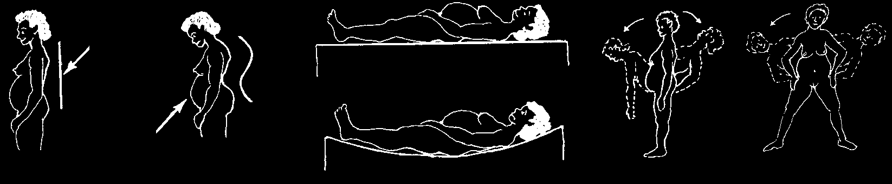


Treatment and prevention of back pain:
♦ If back pain has a cause like TB, a urinary infection, or gallbladder disease, treat the cause. Seek medical help if you suspect a serious disease.
♦ Simple backache, including that of pregnancy, can often be prevented or made better by:
back-bending always standing straight sleeping on a firm flat surface exercises (done like this very slowly)
like this not not like this like this
♦ Aspirin and hot soaks (p. 195) help calm most kinds of back pain.
♦ For sudden, severe, low back pain that comes from twisting, lifting, bending, or straining, quick relief can sometimes be brought like this:
Then, holding this shoulder down,
Have the person lie with one foot gently but steadily push this tucked under knee over so as to twist the his knee.
back.
Do this first on one side and then the other.
CAUTION: Do not try this if the back pain is from a fall or injury.
♦ If back pain from lifting or twisting is sudden and severe with knife-like pain when you bend over, if the pain goes into the leg(s), or if a foot becomes numb or weak, this is serious. A nerve coming from the back may be 'pinched’ by a slipped disc (pad between the bones of the back). It is best to rest flat on your back for a few days. It may help to put something firm under the knees and mid back.
♦ Take aspirin and use hot soaks. If pain does not begin to get better in a few days, seek medical advice.
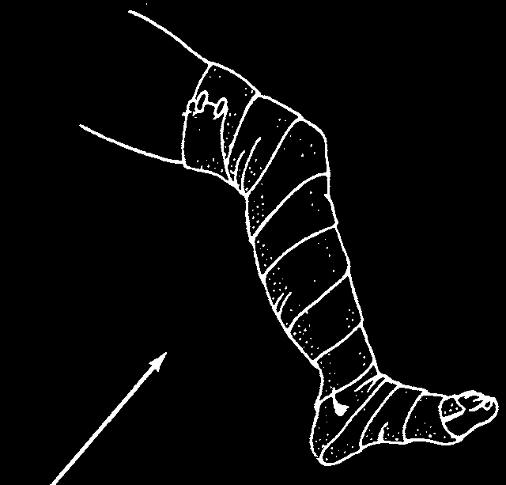
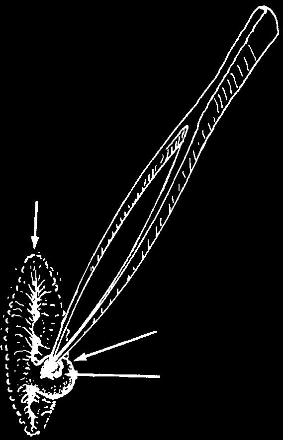
VARICOSE VEINS
Varicose veins are veins that are swollen, twisted, and often painful. They are often seen on the legs of older people and of women who are pregnant or who have had many children.
Treatment:
There is no medicine for varicose veins. But the following will help:
♦ Do not spend much time standing or sitting with your feet down. If you have no choice but to sit or stand for long periods, try to lie down with your feet up (above the level of the heart) for a few minutes every half hour.
When standing, try to walk in place. Or, repeatedly lift your heels off the ground and put them back down.
Also, sleep with your feet up (on pillows).
♦ Use elastic stockings (support hose) or elastic bandages to help hold in the veins. Be sure to take them off at night.
♦ Taking care of your veins in this way will help prevent chronic sores or varicose ulcers on the ankles (p. 213).
PILES (HEMORRHOIDS)
Piles or hemorrhoids are varicose veins of the anus or rectum, which feel like little lumps or balls. They may be painful, but are not dangerous. They frequently appear during pregnancy and may go away afterwards.
♦ Certain bitter plant juices (witch hazel, cactus, etc.) dabbed on hemorrhoids help shrink them. So do hemorrhoid suppositories (p. 391).
♦ Sitting in a bath of warm water can help the hemorrhoid heal.
♦ Piles may be caused in part by constipation. It helps to eat plenty of fruit or food with a lot of fiber, like cassava or bran.
♦ Very large hemorrhoids may require an operation. Get medical advice.
If a hemorrhoid begins to bleed, the bleeding can sometimes be controlled by pressing with a clean cloth directly on the hemorrhoid. If the bleeding still does not stop, seek medical advice.
anus
Or try to control the bleeding by removing the clot that is inside the swollen vein.
First, clean the anus with soap and water. Use a blade that has been sterilized by boiling to cut a small opening in the hemorrhoid. Use sterilized hemorrhoid tweezers to pull out the clot. Put pressure on the cut with a clean cloth until bleeding stops.
blood clot
CAUTION: Do not try to cut the hemorrhoid out. The person can bleed to death.

SWELLING OF THE FEET AND OTHER PARTS OF THE BODY
Swelling of the feet may be caused by a number of different problems, some minor and others serious. But if the face or other parts of the body are also swollen, this is usually a sign of serious illness.
Women’s feet sometimes swell during the last three months of pregnancy. This is usually not serious. It is caused by the weight of the child that presses on the veins coming from the legs in a way that limits the flow of blood. However, if the woman also has high blood pressure, swollen face, a lot of protein in her urine, or sudden weight gain, she may be suffering from pre-eclampsia (see p. 249). Seek medical help fast.
Old people who spend a lot of time sitting or standing in one place often get swollen feet because of poor circulation. However, swollen feet in older persons may also be due to heart trouble (p. 325) or, less commonly, kidney disease (p. 234).
Swelling of the feet in small children may result from anemia (p. 124) or malnutrition
(p. 107). In severe cases of malnutrition the face and hands may also become swollen
(see Kwashiorkor, p. 113).
Treatment:
To reduce swelling, treat the sickness that causes it. Use little or no salt in food.
Herbal teas that make people urinate a lot usually help (see corn silk, p. 12). Also do the following:
WHEN YOUR FEET ARE SWOLLEN:
Do not spend time sitting with your feet
GOOD
down. This makes them swell more.
NO
When you sit, put your feet up high. This way the swelling becomes less. Put your feet up several times a day. Your feet should be above the level of your heart.
Also sleep with your feet raised.
BETTER
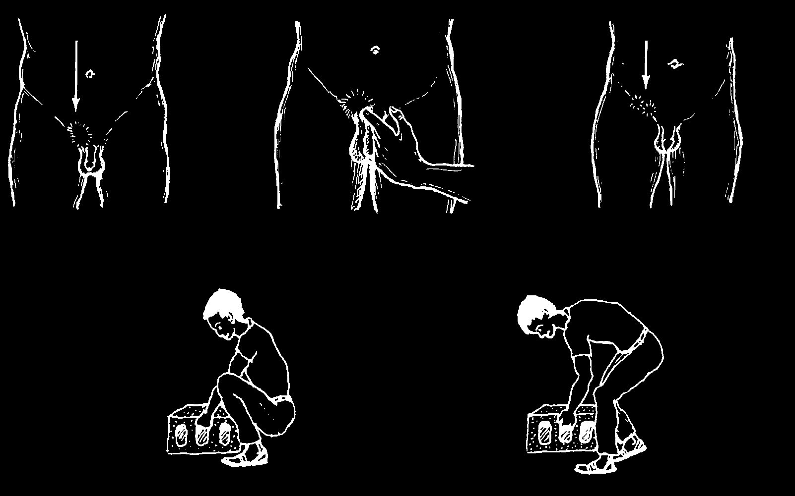
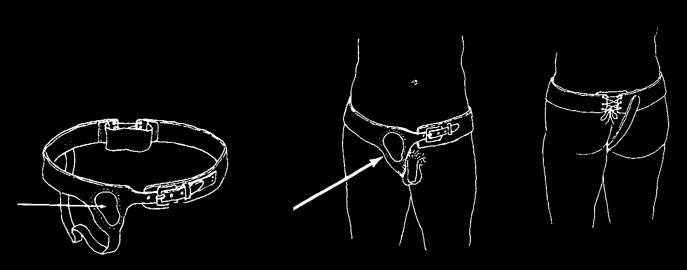
HERNIA (RUPTURE)
A hernia is an opening or tear in the muscles covering the belly. This permits a loop of gut to push through and form a lump under the skin. Hernias usually come from lifting something heavy, or straining (as during childbirth). Some babies are born with a hernia (see p. 317). In men, hernias are common in the groin. Swollen lymph nodes (p. 88) may also cause lumps in the groin. However...
A hernia is and you can feel it with a
Lymph nodes are usually here, finger, like this.
usually here
It gets bigger when you and do not get bigger cough (or lift).
when you cough.
How to prevent a hernia:
Lift heavy not things like this like this.
How to live with a hernia:
♦ Avoid lifting heavy objects.
♦ Make a truss to hold the hernia in.
PLAN FOR A SIMPLE TRUSS:
Put a little cushion here so it presses against the groin.
CAUTION: If a hernia suddenly becomes large or painful, try to make it go back in by lying with the feet higher than the head and pressing gently on the bulge. If it will not go back, seek medical help.
If the hernia becomes very painful and causes vomiting, and the person cannot have a bowel movement, this can be very dangerous. Surgery may be necessary. Seek medical help fast. In the meantime, treat as for
Appendicitis (p. 95).

SEIZURES (FITS, CONVULSIONS)
We say a person has a seizure when he suddenly loses consciousness and makes strange, jerking movements (convulsions). Seizures come from a problem in the brain. In small children, common causes of seizures are high fever and severe dehydration. In very ill persons, the cause may be meningitis, malaria of the brain (cerebral malaria), or poisoning. In pregnant women, it may be eclampsia (see p. 249). A person who often has seizures may have epilepsy.
♦ Try to figure out the cause of a seizure and treat it, if possible.
♦ If the child has a high fever, lower it with cool water (see p. 76).
♦ If the child is dehydrated, give an enema of Rehydration Drink slowly.
Send for medical help. Give nothing by mouth during a seizure.
♦ If there are signs of meningitis (p. 185), begin treatment at once. Seek medical help.
♦ If you suspect cerebral malaria, inject quinine or artesunate (see p. 366).
♦ If you suspect eclampsia, give medicine (see p. 390).
EPILEPSY
Epilepsy causes seizures (fits) in people who otherwise seem fairly healthy. Seizures may come hours, days, weeks, or months apart. In some persons they cause loss of consciousness and violent movements. The eyes often roll back. In mild types of epilepsy the person may suddenly 'blank out’ a moment, make strange movements, or behave oddly. Epilepsy is more common in some families (inherited). Or it may come from brain damage at birth, high fever in infancy, or tapeworm cysts in the brain
(p. 143). Epilepsy is not an infection and cannot be 'caught’. It is often a life-long problem. However, babies sometimes get over it.
Medicines to prevent epileptic seizures:
Note: These do not 'cure’ epilepsy; they help prevent seizures. Often the medicine must be taken for life.
♦ Phenobarbital often controls epilepsy. It costs little (see p. 389).
♦ Phenytoin may work when phenobarbital does not. Use the lowest possible dose that prevents seizures (see p. 389).
When a person is having a seizure:
♦ Try to keep the person from hurting himself:
move away all hard or sharp objects.
♦ Put nothing in the person’s mouth while he is having a seizure—no food, drink, medicine, nor any object to prevent biting the tongue.
♦ After the seizure the person may be dull and sleepy. Let him sleep.
♦ If a seizure lasts more than 15 minutes, put liquid diazepam in the anus using a plastic syringe without a needle. For dosage see page 389. Do not inject phenytoin, phenobarbitol, or diazepam into the muscles. These medicines can be injected in the vein, but it is very dangerous if you have little experience. Only a person with experience giving injections into a vein should give injections of these medicines.
For more information on seizures, see Disabled Village Children, Chapter 29.
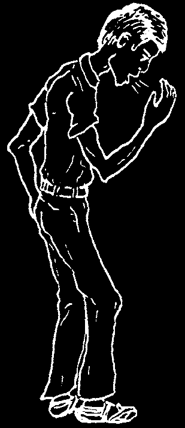
CHAPTER
Serious Illnesses that Need
Special Medical Attention
The diseases covered in this chapter are often difficult or impossible to cure without medical help. Many need special medicines that are difficult to get in rural areas. Home remedies will not cure them. If a person has one of these illnesses, THE SOONER HE GETS MEDICAL HELP, THE BETTER HIS CHANCE
OF GETTING WELL.
CAUTION: Many of the illnesses covered in other chapters may also be serious and require medical assistance. See the Signs of Dangerous Illness, p. 42.
TUBERCULOSIS (TB, CONSUMPTION)
Tuberculosis of the lungs is a chronic (long-lasting), contagious (easily spread)
disease that anyone can get. But it often strikes persons between 15 and 35 years of age—especially those who are weak, poorly nourished, have HIV, or live with someone who has TB. Because so many people with HIV (p. 399) get very sick with
TB, all people with HIV should get a TB test. People with HIV can take isoniazid (see p. 360) to prevent TB from developing. Encourage people with TB to also be tested for HIV and find help with a treatment program if they are positive.
Tuberculosis is curable. Yet thousands die needlessly from this disease every year. Both for prevention and cure, it is very important to treat tuberculosis early.
Be on the lookout for the signs of tuberculosis. A person may have one or many of them.
Most frequent signs of TB:
• A cough that lasts longer than 3 weeks, often worse just after waking up.
• Slight fever in the evening and sweating at night.
• There may be pain in the chest or upper back.
• Chronic loss of weight and increasing weakness.
In serious or advanced cases:
• Coughing up blood (usually a little, but in some cases a lot).
• Pale, waxy skin. The skin of a dark skinned person tends to get lighter, especially the face.
• Voice grows hoarse (very serious).
In young children: The cough may come late. Instead, look for:
• Steady weight loss.
• Frequent fever.
• Lighter skin color.
• Swellings in the neck (lymph nodes), or the belly (p. 20).
TB is usually only in the lungs. But it can affect any part of the body. In young children it may cause meningitis (see p. 185). For skin problems from TB, see p. 212.
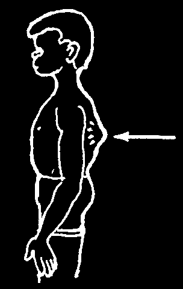
If you think you might have tuberculosis:
Seek medical help. At the first sign of tuberculosis, go to a health center where the workers can examine you, and test the stuff you cough up (phlegm or sputum) to see if you have TB or not. Many governments give TB medicines free. Ask at the nearest health center. You will probably be given some of the following medicines:
♦ Isoniazid (INH) pills (p. 360)
♦ Ethambutol pills (p. 361)
♦ Rifampin pills (p. 360).
♦ Streptomycin injections (p. 361)
♦ Pyrazinamide pills (p. 361)
It is very important to take the medicines as directed. Treatments may be different in different countries, but usually the treatment has 2 parts. You will take 4 medicines for 2 months and then test your sputum. If you are getting better, you will take 2 or 3 medicines for another 4 months. Then you will be tested again to make sure you are cured. Do not stop taking the medicines, even if you feel better. This can lead to the illness coming back and infecting you and other people, with a form of TB that is much harder to cure, multi-drug resistant tuberculosis (see p. 361). To cure TB completely can take from 6 months to more than a year.
Eat as well as possible: plenty of energy foods and also foods rich in proteins and vitamins (p. 110 to 111). Rest is important. If possible, stop working and take it easy until you begin to get better. From then on, try not to work so hard that you become tired or breathe with difficulty. Try to always get enough rest and sleep.
Tuberculosis in any other part of the body is treated the same as TB of the lungs, but the treatment may be longer. This includes TB in the glands of the neck, TB of the abdomen (see picture on p. 20), TB of the skin (see p. 212), and TB of a joint (like the knee). A child with severe TB of the backbone may also need surgery to prevent paralysis (see
Disabled Village Children, Chapter 21).
Tuberculosis is very contagious. It spreads when someone with TB coughs germs into the air. Anyone,
TB of especially a child, who lives with someone who has TB the backbone runs a great risk of catching the disease.
If someone in the house has TB:
♦ If possible, see that the whole family is tested for TB (Tuberculin test).
♦ Have the children vaccinated against TB with B.C.G. vaccine.
♦ Everyone, especially the children, should eat plenty of nutritious food.
♦ The person with TB should eat and sleep separately from the children, if possible in a different room, as long as he has any cough at all.
♦ Ask the person with TB to cover his mouth when coughing and not spit on the floor.
♦ Watch for weight loss and other signs of TB in members of the family.
Weigh each person, especially the children, once a month, until you are sure no one in the household is sick with TB.
TB in family members often starts very slowly and quietly. If anyone in the family shows signs of TB, have tests done and begin treatment at once.
Early and full treatment is a key part of prevention.
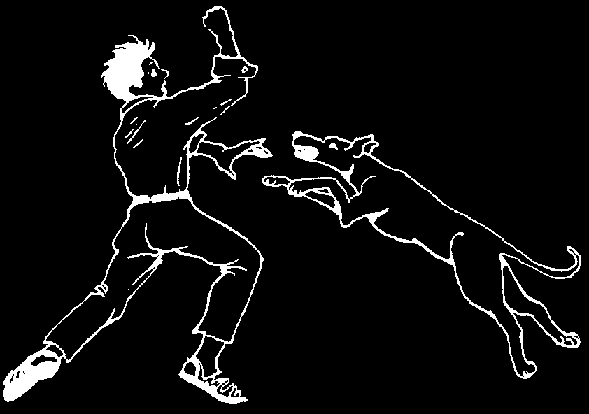
RABIES
Rabies comes from the bite of a rabid or 'mad’ animal, usually a rabid dog, cat, fox, wolf, skunk, or jackal. Bats and other animals may also spread rabies.
Signs of rabies:
In the animal:
• Acts strangely—sometimes sad, restless, or irritable.
• Foaming at the mouth, cannot eat or drink.
• Sometimes the animal goes wild (mad) and may bite anyone or anything nearby.
• The animal dies within 5 to 7 days.
Signs in people:
• Pain and tingling in the area of the bite.
• Irregular breathing, as if the person has just been crying.
• Pain and difficulty swallowing, and fear of liquids. A lot of thick, sticky saliva.
• The person is alert, but very nervous or excitable. Fits of anger can occur.
• As death nears, seizures (convulsions) and paralysis.
If you have any reason to believe an animal that has bitten someone has rabies:
♦ Tie or cage the animal for a week.
♦ Clean the bite well with soap, water, and hydrogen peroxide. Do not close the wound; leave it open.
♦ If the animal dies before the week is up (or if it was killed or cannot be caught), take the bitten person at once to a health center where he can be given a series of anti-rabies injections.
The first symptoms of rabies appear from 10 days up to 2 years after the bite
(usually within 3 to 7 weeks). Treatment must begin before the first signs of the sickness appear. Once the sickness begins, no treatment known to medical science can save the person’s life.
Prevention:
♦ Kill and bury (or cage for one week) any animal suspected of having rabies.
♦ Cooperate with programs to vaccinate dogs.
♦ Keep children far away from any animal that seems sick or acts strangely.
Take great care in handling any animal that seems sick or acts strangely.
Even if it does not bite anyone, its saliva can cause rabies if it gets into a cut or scratch.
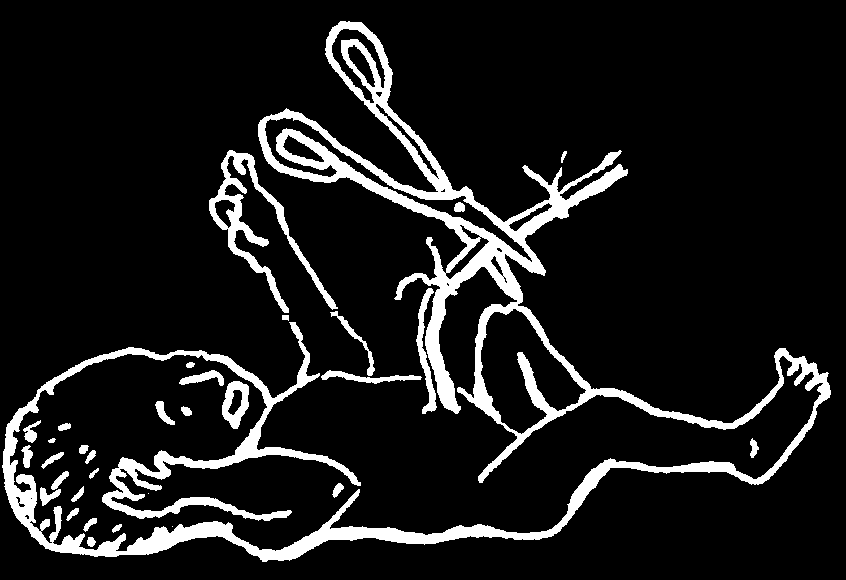
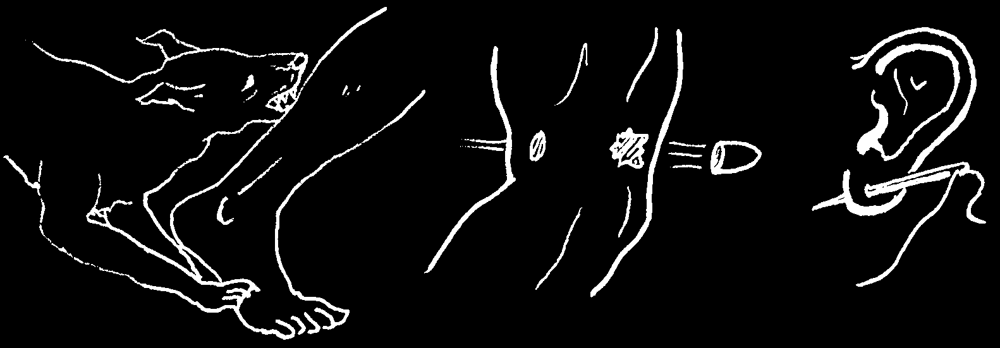
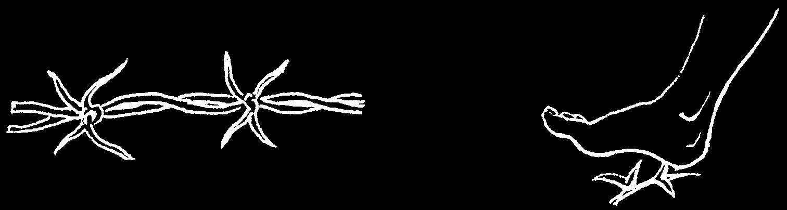
TETANUS (LOCKJAW)
Tetanus results when a germ that lives in the feces of animals or people enters the body through a wound. Deep or dirty wounds are especially dangerous.
WOUNDS VERY LIKELY TO CAUSE TETANUS
animal bites, especially gunshot and holes made with those of dogs and pigs knife wounds dirty needles injuries caused puncture wounds by barbed wire from thorns, splinters, or nails
CAUSES OF TETANUS IN THE NEWBORN CHILD
Tetanus germs enter through the
WHEN THE CORD IS CUT A
umbilical cord of a newborn baby because
LONG WAY FROM THE BODY, of lack of cleanliness or failure to take
LIKE THIS, THE CHANCE OF
TETANUS IS GREATER.
other simple precautions. The chance of tetanus is greater...
• when the cord has been cut with an instrument that has not been boiled and kept completely clean, or
• when the cord has not been cut close to the body (see p. 262), or
• when the newly cut cord is tightly covered or is not kept dry.


Signs of tetanus:
• An infected wound (sometimes no wound can be found).
• Discomfort and difficulty in swallowing.
• The jaw gets stiff (lockjaw), then the muscles of the neck and other parts of the body get stiff. The person has difficulty walking normally.
• Painful convulsions (sudden tightening) of the jaw and finally of the whole body. Moving or touching the person may trigger sudden spasms like this:
Sudden noise or bright light may also bring on these spasms.
In the newborn, the first signs of tetanus generally appear 3 to 10 days after birth. The child begins to cry continuously and is unable to suck. Often the umbilical area is dirty or infected. After several hours or days, lockjaw and the other signs of tetanus begin.
It is very important to start treating tetanus at the first sign. If you suspect tetanus
(or if a newborn child cries continuously or stops nursing), make this test:
TEST OF KNEE REFLEXES
With the leg hanging freely,
If the leg jumps
If the leg jumps high, this indicates a tap the knee with a knuckle just a little bit, the serious illness like tetanus (or perhaps just below the kneecap.
reaction is normal.
meningitis or poisoning with certain medicines or rat poison).
This test is especially useful when you suspect tetanus in a newborn baby.
What to do when there are signs of tetanus:
Tetanus is a deadly disease. Seek medical help at the first sign. If there is any delay in getting help, do the following things:
♦ Examine the whole body for infected wounds or sores. Often the wound will contain pus. Open the wound and wash it with soap and cool, boiled water;
completely remove all dirt, pus, thorns, splinters, etc.; flood the wound with hydrogen peroxide if you have any.
(continued on the next page)
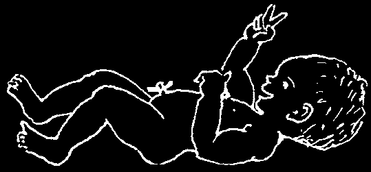

What to do when there are signs of tetanus: (continued)
♦ Inject 1 million units of procaine penicillin at once and repeat every 12 hours
(p. 352). (For newborn babies crystalline penicillin is better.) If there is no penicillin, use another antibiotic, like tetracycline.
♦ If you can get it, inject 5,000 units of Human Immune Globulin or 40,000 to
50,000 units of Tetanus Antitoxin. Be sure to follow all the precautions (see p. 70 and 388). Human Immune Globulin has less risk of severe allergic reaction, but may be more expensive and harder to obtain.
♦ As long as the person can swallow, give nutritious liquids in frequent small sips.
♦ To control convulsions, give diazepam (Valium) by mouth or in the rectum (for dosages see p. 389 and 390).
♦ Touch and move the person as little as possible. Avoid noise and bright light.
♦ If necessary, use a catheter (rubber tube) connected to a syringe to suck the mucus from the nose and throat. This helps clear the airway.
♦ For the newborn with tetanus, if possible, have a health worker or doctor put in a nose-to-stomach tube and feed the baby the mother’s breast milk. This provides needed nutrition and fights infection.
How to prevent tetanus:
Even in the best hospitals, half the people with tetanus die. It is much easier to prevent tetanus than to treat it.
♦ Vaccination: This is the surest protection against tetanus. Both children and adults should be vaccinated. Vaccinate your whole family at the nearest health center (see p. 147). For complete protection, the vaccination should be repeated once every 10 years. Vaccinating women against tetanus each time they are pregnant will prevent tetanus in newborn infants (see p. 250).
♦ When you have a wound, especially a dirty or deep wound, clean and take care of it in the manner described on page 89.
♦ If the wound is very big, deep, or dirty, seek medical help. If you have not been vaccinated against tetanus, consider getting an injection of an antitoxin for tetanus (see p. 388).
♦ In newborn babies, cleanliness is very important to prevent tetanus. The instrument used to cut the umbilical cord should be sterilized (p. 262); the cord should be cut short, and the umbilical area kept clean and dry.
THIS BABY’S CORD WAS CUT
THIS BABY’S CORD WAS LEFT
SHORT, KEPT DRY, AND LEFT OPEN
LONG, KEPT TIGHTLY COVERED,
TO THE AIR.
AND NOT KEPT DRY.
HE STAYED HEALTHY.
HE DIED OF TETANUS.

MENINGITIS
This is a very serious infection of the brain, more common in children. It may begin as a complication of another illness, such as measles, mumps, whooping cough, malaria, or an ear infection. Children of mothers who have tuberculosis sometimes get tubercular meningitis in the first few months of life.
Signs:
• Fever
• Severe headache.
• Stiff neck. The child looks very ill, and lies with his head and neck bent back, like this:
• The back is too stiff to put the head between the knees.
• In babies under a year old: the fontanel (soft spot on top of the head)
bulges out.
• Vomiting is common.
• In babies and young children, early meningitis may be hard to recognize.
The child may cry in a strange way (the 'meningitis cry’), even when the mother puts the child on her breast. Or the child may become very sleepy.
• Sometimes there are seizures (fits, convulsions) or strange movements.
• The child often gets worse and worse and only becomes quiet when he loses consciousness completely.
• Tubercular meningitis develops slowly, over days or weeks. Other forms of meningitis come on more quickly, in hours or days.
Treatment:
Get medical help fast—every minute counts! If possible take the person to a hospital. Meanwhile:
♦ Inject ampicillin every 6 hours, 500 mg. for children or 1 g. for adults (see p. 352). If possible, also give chloramphenicol (see p. 356).
♦ If there is high fever (more than 40°), lower it with wet cloths and acetaminophen or aspirin (see p. 378 to 379).
♦ If the mother has tuberculosis or if you have any other reason to suspect that the child has tubercular meningitis, inject him with 20 mg. of streptomycin for each kg. he weighs and get medical help at once. Also, use ampicillin in case the meningitis is not from TB.
♦ If you know the meningitis came from malaria, give an injection of artesunate or quinine at once (see p. 366).
Prevention:
For prevention of tubercular meningitis, newborn babies of mothers with tuberculosis should be vaccinated with B.C.G. at birth. Dose for the newborn is
0.05 ml. (half the normal dose of 0.1 ml.). For other suggestions on prevention of
TB, see pages 179 to 180.
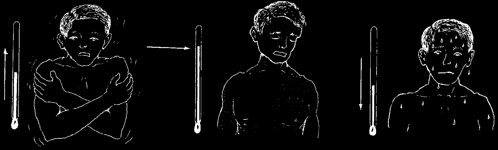
MALARIA
Malaria is an infection of the blood that causes chills and high fever. Malaria is spread by mosquitos. The mosquito sucks up the malaria parasites in the blood of an infected person and injects them into the next person it bites. People with HIV are twice as likely to catch malaria.
Signs of malaria:
• The typical attack has 3 stages:
1. It begins with
2. Chills are followed by fever,
3. Finally the person chills—and often often 40° or more. The person is begins to sweat, and headache. The person weak, flushed (red skin), and at his temperature goes shivers or shakes for times delirious (not in his right down. After an attack,
15 minutes to an hour.
mind). The fever lasts several the person feels weak, hours or days.
but may feel more or less OK.
• Usually malaria causes fevers every 2 or 3 days (depending on the kind of malaria), but in the beginning it may cause fever daily. Also, the fever pattern may not be regular or typical. For this reason anyone who suffers from unexplained fevers should have his blood tested for malaria.
• Chronic malaria often causes a large spleen and anemia (see p. 124). For people with HIV (p. 399) it can cause them to get sick faster.
• In young children, anemia and paleness can begin within a day or two. In children with malaria affecting the brain (cerebral malaria), seizures (fits) may be followed by periods of unconsciousness. Also, the palms may show a blue gray color, and breathing may be rapid and deep. (Note: Children who have not been breastfed are more likely to get malaria.)
Analysis and treatment:
♦ If you suspect malaria or have repeated fevers, if possible go to a health center for a blood test. In areas where an especially dangerous type of malaria called falciparum occurs, seek treatment immediately.
♦ In areas where malaria is common and blood tests are not available, treat any unexplained high fever as malaria. Take the malaria medicine known to work best in your area. (See pages 363 to 367 for dosages and information on malaria medicines.)
♦ If you get better with the medicine, but after several days the fevers start again, you may need another medicine. Get advice from the nearest health center.
♦ If a person who possibly has malaria begins to have seizures or other signs of meningitis (p. 185) he may have cerebral malaria. If possible, inject quinine or artesunate at once (see p. 366).
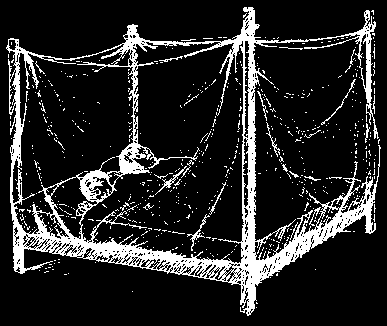

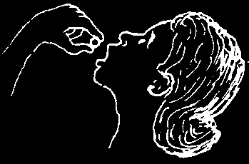